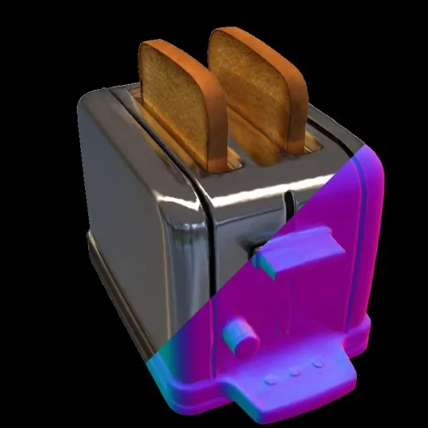

新论文 · 日期 2026-06-03 · score 12 · cs.CV, cs.GR
作者：Adrian Ramlal, John S. Zelek
评分 9/10
4DGS动态重建可微物理遮挡补全
一句话工作总结：把可微刚体物理引入 4DGS，用对象级运动先验解决完全遮挡时的动态重建退化。
动态 3DGS 在物体被所有训练相机完全遮挡时会失去光度监督，导致对应 Gaussian 退化。PersistGS 将对象级 Gaussian 与碰撞网格结合，用可微刚体仿真从遮挡前轨迹估计摩擦和速度，并在遮挡期预测满足物理规律的 SE(3) 轨迹，从而改善遮挡期间的动态场景重建。
Dynamic 3D Gaussian Splatting (3DGS) methods reconstruct time-varying scenes from synchronized multi-camera video using photometric supervision. When a moving object becomes fully occluded from all training ca…

新论文 · 日期 2026-06-03 · score 12 · cs.CV, cs.GR
作者：Zuo-Liang Zhu, Beibei Wang, Jian Yang
评分 8.6/10
3DGSSDF反射物体RelightingMesh
一句话工作总结：用 3DGS 与 SDF 双向约束补足反射物体下的几何、法向和重光照能力。
该工作用 SDF 约束 3DGS 的深度和法向，避免昂贵的 SDF 体渲染；同时用 Gaussian blended normal 反向细化 SDF，并通过 SDF-aware pruning 去除 floater。目标是在反射物体上同时获得高效渲染、合理法向、真实 relighting 和更高质量 mesh。
3D Gaussian Splatting (3DGS) has shown a powerful capability for novel view synthesis due to its detailed expressive ability and highly efficient rendering speed. Unfortunately, creating relightable 3D assets…
新论文 · 日期 2026-06-03 · score 11 · eess.IV, cs.CV, cs.LG, cs.RO
作者：Dan Jacobellis, Neeraja J. Yadwadkar
评分 8.2/10
机器人视觉压缩云端机器人重建数据链路
一句话工作总结：用 learned latent + JPEG 兼容转码降低机器人视觉数据上传和云端重建成本。
SEAOTTER 面向云端机器人视觉数据链路，在传感器端生成 learned latent，并通过一次性转码生成兼容 JPEG 基础设施的文件；可学习的 JPEG 颜色和量化变换用于减少压缩对密集感知和视觉语言任务的损伤。
In robotics systems, vast amounts of visual data are easily captured at high resolution using low-cost, low-power hardware. Yet, limited bandwidth and on-device compute resources prevent full utilization when…
新论文 · 日期 2026-06-03 · score 9 · cs.CV, cs.AI, cs.GR, cs.LG
作者：Tianhe Wu, Kun Yan, Zikai Zhou, Lihan Jiang, Jiahao Li, Jie Zhang, Kaiyuan Gao, Ningyuan Tang, Shengming Yin, Xiaoyue Chen, Xiao Xu, Yilei Chen, Yuxiang Chen, Yan Shu, Yixian Xu, Yanran Zhang, Zihao Liu, Zhendong Wang, Zekai Zhang, Deqing Li, Liang Peng, Yi Wang, Jingren Zhou, Chenfei Wu
Few-step distillation has become an effective strategy for accelerating advanced visual generative models, yet prior work has largely focused on distillation objectives. In this work, we revisit few-step disti…
Few-step distillation has become an effective strategy for accelerating advanced visual generative models, yet prior work has largely focused on distillation objectives. In this work, we revisit few-step disti…
新论文 · 日期 2026-06-03 · score 9 · eess.IV, cs.AI, cs.CV
作者：Spoorthi M, Suja Palaniswamy
We identify and resolve a previously unreported failure mode in TensoRF when applied to X-ray attenuation fields: the default density shift of -10, originally introduced for RGB scene reconstruction, suppresse…
We identify and resolve a previously unreported failure mode in TensoRF when applied to X-ray attenuation fields: the default density shift of -10, originally introduced for RGB scene reconstruction, suppresse…
新论文 · 日期 2026-06-03 · score 7 · cs.CV, cs.AI
作者：Fabian Degen, Oishi Deb, Jindong Gu, Junchi Yu, Samuele Marro, Philip Torr, Jialin Yu
评分 7.4/10
地理空间地图配准GeoJSON多模态
一句话工作总结：把规划文档、地图版面和标注转成可验证的地理边界重建流程。
Plan2Map 用 UK planning records 构建 208 个文档到 GeoJSON 边界重建任务；GeoPlanAgent 将任务拆成证据提取、定位、地图配准、边界分割、投影和验证，显著优于直接 VLM-to-GeoJSON。
Planning records define restrictions over geographic areas, but their source documents often provide only indirect spatial evidence rather than machine-readable boundaries. We introduce Plan2Map, a 208-case mu…
新论文 · 日期 2026-06-03 · score 7 · eess.IV, cs.AI, cs.LG
作者：Yunlong Zhou, Chen Zhao, Danyang Peng, Fanfan Ji, Xiao-Tong Yuan
Accurate precipitation nowcasting is vital for disaster mitigation, but deep learning methods face a key trade-off: regression models produce over-smoothed, spectrally decaying predictions that blur convective…
Accurate precipitation nowcasting is vital for disaster mitigation, but deep learning methods face a key trade-off: regression models produce over-smoothed, spectrally decaying predictions that blur convective…
新论文 · 日期 2026-06-03 · score 7 · cs.LG, cs.AI, eess.IV
作者：Nikola Cenikj, \"Ozg\"un Turgut, Alexander M\"uller, Alexander Steger, Jan Kehrer, Marcus Brugger, Daniel Rueckert, Philip M\"uller
Coronary artery stenosis is a common cardiovascular disease, with severe, untreated cases posing significant risks of heart attack. Although coronary (X-ray) angiograms remain the standard for stenosis diagnos…
Coronary artery stenosis is a common cardiovascular disease, with severe, untreated cases posing significant risks of heart attack. Although coronary (X-ray) angiograms remain the standard for stenosis diagnos…
新论文 · 日期 2026-06-03 · score 6 · cs.CV, physics.comp-ph
作者：Hsiao-Jou Hsu, Joachim Moortgat
Satellite-derived bathymetry (SDB) from multispectral imagery is cost-effective but scales poorly across regions, especially in optically complex coastal environments. We evaluate machine learning and deep lea…
Satellite-derived bathymetry (SDB) from multispectral imagery is cost-effective but scales poorly across regions, especially in optically complex coastal environments. We evaluate machine learning and deep lea…
新论文 · 日期 2026-06-03 · score 6 · cs.RO, cs.AI, cs.LG
作者：Yueh-Hua Wu, Tatsuya Matsushima, Kei Ota
Generalization remains a central bottleneck for vision-language-action (VLA) models: under distractors, appearance shifts, and semantically similar tasks, the policy must often infer local execution details fr…
Generalization remains a central bottleneck for vision-language-action (VLA) models: under distractors, appearance shifts, and semantically similar tasks, the policy must often infer local execution details fr…
新论文 · 日期 2026-06-03 · score 6 · cs.AI
作者：Liangwei Yang, Jielin Qiu, Zixiang Chen, Ming Zhu, Juntao Tan, Zhiwei Liu, Wenting Zhao, Zhujun Lan, Akshara Prabhakar, Silvio Savarese, Huan Wang, Shelby Heinecke
Many decision-support settings require systems that adapt to individual users, but evaluation data for this problem remain limited. Existing benchmarks for user understanding often rely on simulated users or m…
Many decision-support settings require systems that adapt to individual users, but evaluation data for this problem remain limited. Existing benchmarks for user understanding often rely on simulated users or m…
新论文 · 日期 2026-06-03 · score 6 · eess.SP
作者：Zachary L. Clements, Argyris Kriezis, Todd E. Humphreys
评分 8.8/10
GNSS干扰检测TDOA安全定位
一句话工作总结：从参考站网络层面识别空间基 GNSS 干扰源，为鲁棒定位提供威胁模型。
论文基于 2019–2026 年地面 GNSS 参考站网络数据，检测并分析覆盖欧洲、格陵兰和加拿大的强瞬态广域干扰事件；通过 received-power 与 TDOA 技术组合，将干扰源定位为 Molniya 轨道上的俄罗斯早期预警卫星星座。
This paper analyzes and identifies a space-based Global Navigation Satellite System (GNSS) interference source that has caused scores of powerful transient wide-area interference events over continental Europe…
新论文 · 日期 2026-06-03 · score 5 · eess.IV, cs.CV
作者：Junjie Luo, Wei Xu, Dylan Chu, Emma Alexander, Qi Guo
评分 8/10
深度估计StereoDefocus小基线
一句话工作总结：用散焦与双目的一致性让小基线被动相机也能做高精度近距离深度。
该方法用 Dual Differential Defocus 与 stereo 生成一组过定深度估计，再通过物理独立 cue 的一致性选择可信结果。原型只有 4 mm baseline 和 12 mm EFL，却可在 0.3–1.64 m 范围内输出高分辨率深度图。
We introduce D^3S Consensus, a physics-based, closed-form algorithm that unifies depth-from-defocus (DfD) and stereo to achieve highly accurate depth estimation throughout an extended working range beyond the…
新论文 · 日期 2026-06-03 · score 5 · eess.IV
作者：Yifan Gao, Peiran Xu, Yimeng He, Haoran Li, Ziyang Long, Yufeng Wang, Ju Dong Yang, Debiao Li
Splatting (GS)-based shared geometry framework adopts a two-stage training strategy, in which an explicit, subject-specific Gaussian scaffold encoding anatomical geometry is first learned from the isotropic st…
Splatting (GS)-based shared geometry framework adopts a two-stage training strategy, in which an explicit, subject-specific Gaussian scaffold encoding anatomical geometry is first learned from the isotropic st…
新论文 · 日期 2026-06-03 · score 4 · cs.CV, cs.LG
作者：Arafat Hossain Sayem
Camouflaged object detection has improved substantially, but most standard benchmarks evaluate models only on clean images. This is not realistic because real cameras often capture blur, sensor noise, weather…
Camouflaged object detection has improved substantially, but most standard benchmarks evaluate models only on clean images. This is not realistic because real cameras often capture blur, sensor noise, weather…
新论文 · 日期 2026-06-03 · score 4 · cs.CV, cs.AI
作者：Yaoting Wang, Yun Zhou, Zipei Zhang, Henghui Ding
Audio-visual speaker tracking aims to localize and track active speakers by leveraging auditory and visual cues, enabling fine-grained, human-centric scene understanding. This capability is essential for real-…
Audio-visual speaker tracking aims to localize and track active speakers by leveraging auditory and visual cues, enabling fine-grained, human-centric scene understanding. This capability is essential for real-…
新论文 · 日期 2026-06-03 · score 4 · cs.CV, cs.AI
作者：Teng Hu, Mingchun Lu, Yating Wang, Jiangning Zhang, Jinkun Hao, Ye Pan, Ran Yi, Lizhuang Ma, Dacheng Tao
Video world models are a foundational generative technology for embodied AI and the Metaverse, yet existing approaches are inherently limited to a single agent observing from a single perspective. Extending th…
Video world models are a foundational generative technology for embodied AI and the Metaverse, yet existing approaches are inherently limited to a single agent observing from a single perspective. Extending th…
新论文 · 日期 2026-06-03 · score 4 · cs.RO, cs.AI
作者：Kyle Morgenstein, Bharath Masetty, Stephen Welch, Luis Sentis
While sim2real efforts are necessary for effective policy transfer to hardware, there is such a thing as too much of a good thing. We argue that sim2real efforts have led to misaligned incentives with policy l…
While sim2real efforts are necessary for effective policy transfer to hardware, there is such a thing as too much of a good thing. We argue that sim2real efforts have led to misaligned incentives with policy l…
新论文 · 日期 2026-06-03 · score 4 · cs.RO, cs.AI
作者：Yifan Wang
Interactive driving exposes a failure mode that is easy to miss in rule-aware autonomous-driving stacks: a hard-rule margin can be negative for an ego candidate even though a small lawful accommodation by a no…
Interactive driving exposes a failure mode that is easy to miss in rule-aware autonomous-driving stacks: a hard-rule margin can be negative for an ego candidate even though a small lawful accommodation by a no…
新论文 · 日期 2026-06-03 · score 4 · cs.RO, cs.LG
作者：Jaehyeon Son, Junhyun Kim, Kyle Kam, Jeremiah Coholich, Seok Joon Kim, Jinhoo Kim, Chris Dongjoo Kim, Jaemin Cho, Dieter Fox, Zsolt Kira
Vision-language-action models (VLAs) are promising general-purpose robot policies, but adapting them to new tasks typically requires costly task-specific teleoperation data. As an alternative, we study one-sho…
Vision-language-action models (VLAs) are promising general-purpose robot policies, but adapting them to new tasks typically requires costly task-specific teleoperation data. As an alternative, we study one-sho…
新论文 · 日期 2026-06-03 · score 4 · cs.RO, cs.LG
作者：Jiho Lee, Nisar R. Ahmed, Rebecca Russell
评分 7.2/10
Kalman自监督跟踪不确定性
一句话工作总结：在保留 Kalman 滤波概率结构的同时，用自监督学习修正模型失配和噪声协方差。
论文提出自监督 Hybrid Adaptive Kalman Filter，从测量中学习系统动力学和过程噪声协方差的结构化修正，同时保留滤波器概率结构和 innovation likelihood，用于模型分类和不确定性一致估计。
Kalman filtering performance is highly sensitive to model mismatch and noise covariance tuning. Learning-based approaches address these limitations but typically rely on supervised training with large datasets…
新论文 · 日期 2026-06-03 · score 4 · cs.CV, cs.GR
作者：Zhaorong Wang, Yoshihiro Kanamori, Yuki Endo
Existing 3D avatar outfit transfer methods face distinct challenges: approaches that lift 2D edits to 3D often suffer from outfit or identity quality degradation, while those that separately model body and clo…
Existing 3D avatar outfit transfer methods face distinct challenges: approaches that lift 2D edits to 3D often suffer from outfit or identity quality degradation, while those that separately model body and clo…
新论文 · 日期 2026-06-03 · score 4 · cs.GR, cs.CV
作者：Yiheng Zhang, Zhe Zhu, Tingrui Shen, Zhuojiang Cai, Tianxiao Li, Zixing Zhao, Qiujie Dong, Zhiyang Dou, Jiepeng Wang, Le Wan, Yuwang Wang, Wenping Wang, Yuan Liu, Cheng Lin
评分 7.7/10
点云Mesh四边形网格三维资产
一句话工作总结：把点云后处理成更适合生产和数字孪生使用的四边形主导网格。
QuadLink 将点云到 polygon mesh 的生成表述为 centroid-conditioned vertex linking，先预测顶点和面中心 anchors，再学习两者关联，并用 quad-first 策略和几何校验组装稀疏、各向异性的四边形主导网格。
The generation of production-ready quad-dominant meshes is a cornerstone of modern 3D content creation. Generating anisotropic quad-dominant meshes from point clouds is challenging, as existing methods are typ…
新论文 · 日期 2026-06-03 · score 4 · eess.IV, cs.AI
作者：Elias Stenhede, Edvart Gr\"uner Bjerke, Joanna Sulkowska, Eivind Bj{\o}rkan Orstad, Ole Jakob Elle, Ulysse C\^ot\'e-Allard, Arian Ranjbar
We introduce Echo-POSED, a self-supervised framework for real-time transthoracic echocardiography (TTE) guidance that recommends probe adjustments directly from 2D ultrasound images, without the need for exper…
We introduce Echo-POSED, a self-supervised framework for real-time transthoracic echocardiography (TTE) guidance that recommends probe adjustments directly from 2D ultrasound images, without the need for exper…
新论文 · 日期 2026-06-03 · score 4 · cs.AI, cs.LG
作者：Runlin Lei, Xiaokui Xiao, Zhewei Wei
Graphs have been used to enhance large language models (LLMs) for structured reasoning, mostly as external knowledge sources are provided to models at test time. In this paper, we take a different view: the va…
Graphs have been used to enhance large language models (LLMs) for structured reasoning, mostly as external knowledge sources are provided to models at test time. In this paper, we take a different view: the va…
新论文 · 日期 2026-06-03 · score 4 · cs.AI, cs.AR, cs.DC, cs.PF
作者：Josef Chen
The KV-cache is the right memory for datacenters but the wrong memory for robots. Datacenter inference batches many short requests and resets them, amortizing an attention cache across a crowd. Embodied agents…
The KV-cache is the right memory for datacenters but the wrong memory for robots. Datacenter inference batches many short requests and resets them, amortizing an attention cache across a crowd. Embodied agents…
新论文 · 日期 2026-06-03 · score 4 · cs.LG, cs.CV
作者：Yuanfang Chen, Peiqiang Yan, Yuntao Shou, Qian Zhao, Xiangyong Cao
In computational pathology, Whole Slide Images (WSIs) survival analysis is crucial for patient prognosis assessment, but it faces multiple technical challenges. Although the Transformer captures long-range dep…
In computational pathology, Whole Slide Images (WSIs) survival analysis is crucial for patient prognosis assessment, but it faces multiple technical challenges. Although the Transformer captures long-range dep…
新论文 · 日期 2026-06-03 · score 4 · cs.LG, cs.AI
作者：Karan Sehgal, Khawar Naveed Bhatti
ESG and climate risk data remain fragmented across heterogeneous Scope 1, Scope 2, and Scope 3 reporting environments, while conventional validation pipelines lack provenance aware auditability, hidden drift d…
ESG and climate risk data remain fragmented across heterogeneous Scope 1, Scope 2, and Scope 3 reporting environments, while conventional validation pipelines lack provenance aware auditability, hidden drift d…
新论文 · 日期 2026-06-03 · score 4 · eess.SY, cs.MA, cs.RO, cs.SY
作者：Shivam Bajpai, Abhinav Sinha
This paper considers the problem of simultaneously controlling an interceptor's impact time and impact angle using its lateral acceleration as the sole control input. With a single control input, the nonlinear…
This paper considers the problem of simultaneously controlling an interceptor's impact time and impact angle using its lateral acceleration as the sole control input. With a single control input, the nonlinear…
新论文 · 日期 2026-06-03 · score 4 · math.OC, cs.SY, eess.SY
作者：Mircea Lazar
This paper develops a data-driven realization of the generalized Koopman operator (GeKo), in which states and inputs are lifted independently and the dynamics are expressed as a tensor bilinear system. The fir…
This paper develops a data-driven realization of the generalized Koopman operator (GeKo), in which states and inputs are lifted independently and the dynamics are expressed as a tensor bilinear system. The fir…
新论文 · 日期 2026-06-03 · score 3 · cs.CV
作者：Yingzi Ma, Chaowei Xiao, Ming Jiang
Vision-language models (VLMs) for autonomous driving have shown promising performance, but their ability to handle region-specific traffic rules remains underexplored, raising uncertainties about their deploym…
Vision-language models (VLMs) for autonomous driving have shown promising performance, but their ability to handle region-specific traffic rules remains underexplored, raising uncertainties about their deploym…
新论文 · 日期 2026-06-03 · score 3 · cs.CV
作者：Divya Mereddy, Ashwin Tudur Sadashiva, Marcos Quinones-Grueiro, Gautam Biswas
Human-object interaction (HOI) recognition is critical for automatically analyzing student behavior in complex educational environments. Although state-of-the-art (SOTA) HOI detectors perform well on benchmark…
Human-object interaction (HOI) recognition is critical for automatically analyzing student behavior in complex educational environments. Although state-of-the-art (SOTA) HOI detectors perform well on benchmark…
新论文 · 日期 2026-06-03 · score 3 · cs.RO
作者：Morgan Mayborne, Abhisesh Silwal, George Kantor
Alternatives to soil-based horticulture, such as hydroponics, have been developed to respond to food distribution concerns for dense urban centers. A new system was developed to track an individual lettuce pla…
Alternatives to soil-based horticulture, such as hydroponics, have been developed to respond to food distribution concerns for dense urban centers. A new system was developed to track an individual lettuce pla…
新论文 · 日期 2026-06-03 · score 3 · cs.AI, cs.CL
作者：Sihang Zeng, Matthew Thompson, Ruth Etzioni, Meliha Yetisgen
Modeling patient trajectories from longitudinal electronic health records (EHRs) requires reasoning over sparse, noisy, and long-context multimodal sequences. Existing LLM-based multi-agent systems address con…
Modeling patient trajectories from longitudinal electronic health records (EHRs) requires reasoning over sparse, noisy, and long-context multimodal sequences. Existing LLM-based multi-agent systems address con…
新论文 · 日期 2026-06-03 · score 3 · eess.SP
作者：Aybars Tokta
In this study, we address the IMU-based heave motion estimation problem for inertial navigation systems. Unlike existing approaches, we propose a data-driven framework in which a bank of IIR filters, each asso…
In this study, we address the IMU-based heave motion estimation problem for inertial navigation systems. Unlike existing approaches, we propose a data-driven framework in which a bank of IIR filters, each asso…
新论文 · 日期 2026-06-03 · score 3 · eess.SP
作者：Zhengchang Kou, Yuning Zhao, Mingrui Liu, Rita J. Miller, Michael L. Oelze
Ultrasound localization microscopy (ULM) enables micrometer-scale microvascular imaging by localizing and tracking intravascular microbubbles, but its dependence on exogenous contrast agents and long acquisiti…
Ultrasound localization microscopy (ULM) enables micrometer-scale microvascular imaging by localizing and tracking intravascular microbubbles, but its dependence on exogenous contrast agents and long acquisiti…
新论文 · 日期 2026-06-03 · score 3 · eess.SY, cs.SY
作者：Liudong Chen, Bolun Xu
We show that incorporating fairness constraints into virtual power plant (VPP) operations can incentivize consumer participation and thus improve the aggregator's long-run profitability. VPPs rely on sustained…
We show that incorporating fairness constraints into virtual power plant (VPP) operations can incentivize consumer participation and thus improve the aggregator's long-run profitability. VPPs rely on sustained…
新论文 · 日期 2026-06-03 · score 3 · eess.SY, cs.SY
作者：Rami Rasheedi, Salma Abdelzaher, Inna Partin-Vaisband
A novel power delivery framework, comprising a package-embedded inductor topology and an inductance-island methodology, is introduced to maximize both inductance and current densities in vertical power deliver…
A novel power delivery framework, comprising a package-embedded inductor topology and an inductance-island methodology, is introduced to maximize both inductance and current densities in vertical power deliver…
新论文 · 日期 2026-06-03 · score 3 · math.OC
作者：Lea Fischer, Nicolas R. Gauger, Lisa Kusch
The one-shot approach is a powerful simultaneous optimization framework for design tasks governed by computationally expensive steady-state systems. While previous formulations mainly focused on additional equ…
The one-shot approach is a powerful simultaneous optimization framework for design tasks governed by computationally expensive steady-state systems. While previous formulations mainly focused on additional equ…